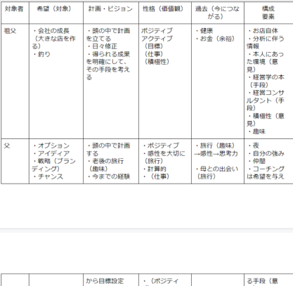
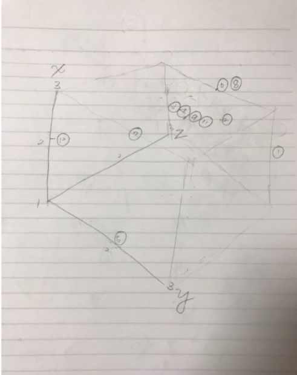

10/7
高橋＆高野の研究メモ
・インタビュー結果の分析(客観的な視点から、その人が持つ視点や価値観を見出すように意識した)
.png)
.png)
.png)
.png)
.png)
●全体の考察
・希望を持って取り組んだ出来事が、現在の希望を構成している
・趣味や好きなこと、大切にしてることは希望の対象になりやすい
・目標達成（希望）のための手段もまた希望になる
・性格（ネガティブ・ポジティブ）が希望の感じやすさに関係する
・自分自身に希望を持てている人は少ないと思った
・不安要素を回避する希望を持っている人も少なくない（ネガティブな人ほど多いかも）、 逃げ道、否定のような形
・計画立てるの好きな人は計画の達成率をあまり気にしてない（計画を立てることが目的（未来の不安をなくす希望））
・人は答えを探してる（その答えが希望）
●疑問点
・過去の希望の連鎖
・顕在意識じゃなくて潜在意識ではどう感じてるのか知りたい
・根幹となる希望（親となる希望）
・教育と希望の関係
・アンケートでどれくらい希望を持てているかを量的に聞く
・生活の満足度（幸福度）と持っている希望の種類
・考えは人それぞれ→自分を信じれている人は大きな希望を持てる？
・与えられる希望と持っている希望は違うのでは？
●思ったこと
・悩むので希望を持てないと言っている人がいたが、希望を持てているから悩むのではないかと思った
・誰もが潜在的に希望を持っている→顕在意識で希望の感じやすさが決まる
・その人にとって最適な希望とは
・大きな希望は大きな行動（熱中）を引き起こす→希望の大きさはどのように変わるか
・信仰って希望と結構関係あるのでは？
・その人が本当に達成したいものはなんなのか（映画見た後とかに感じるもの）
10/14
・評価軸（x.y,z）を設定し、インタビュー結果のグルーピング

x:計画性（低い１〜高い３）
y:希望の大きさ（小さい１〜大きい３）
z:ポジティブ,ネガティブ（ネガティブ１〜ポジティブ３）
.png)
x:計画性（低い１〜高い３）
y:回避性（低い１〜高い３)
z:他者との関係（少ない１〜多い３）
.png)
x:計画性（低い１〜高い３）
y:積極的、消極的（消極１〜積極３）
z:時間（過去１～未来３）
↓
●グルーピング
・１（祖父）、２（父）→
（大きな希望をしっかり持って行動できてる人、行動派、ポジティブ、積極的、仕事）
・３（理学部）、１１（母）→
（中立的、先のことがわからないと不安になる、計画を立てる、人間関係を大事にする、希望は普通、しっかりもの）
・８（地元の友達）、１０（姉）→
（日常的な希望、人間関係を大切にする、楽観的、切り替えが早い（ポジティブ）、マイペース、計画を立てる、）
●思ったこと
・the 希望を抱く人は、人間関係の悩みとかなさそうだし、
人間関係にあまり興味なさそう
・今を大事にしてる人は日常の些細なことに希望を抱く
・人間関係を大切にする→他人に合わせる→自分を後回し→本当にやりたいことを押し殺しているのではないか？
●仮説
・The 希望を持つと、協調性がなくなる→人間関係をあまり気にしなくなる
・頭の中で修正する前提で計画を立てる（書いたりすると固定されちゃう）
・人が計画を立てるのは、不安を解消するため
・人間関係と希望は深く関係しそう
●人間関係に関する疑問
・コミュニケーション能力はあると思うか
・自己肯定感は高いか
・他人にどう思われていると思うか
・他人の目を気にするか
・友達は多いか
・人間関係は浅く広いタイプか（ウィークタイズ）
・ストレス
・悩み 相談
・性格、癖
10/19
・なんとなくで行ってしまったグルーピングを、クラスター分析を用いてしっかりとグルーピングしなおした
・それをまとめたスライド
・クラスター分析により、5つのグループができた。グループごとの特徴をもとにそれぞれ違ったアプローチができるのではないかと考えた。
●気になったこと
・希望の対象は一体何なのか
・なんで希望をもっているのか、なぜその希望をもっているのか、きっかけ
・その人にとっての希望とは
・希望が行動に現れるのでは？
・希望がその人に与える影響とは
・希望の性質
10/26,28
・インタビュー結果を基に、新たにアンケート（量的調査）をとることにした
・目的
①希望の性質の把握および分類
②希望の増減に関わる要因やその人自身のパーソナリティ、持っている希望などの関係性を調べる
③希望を与える手がかりを得る
④希望を良くも悪くも利用した社会現象の解釈の手がかりを得る
・アンケートの構成についてのスライド